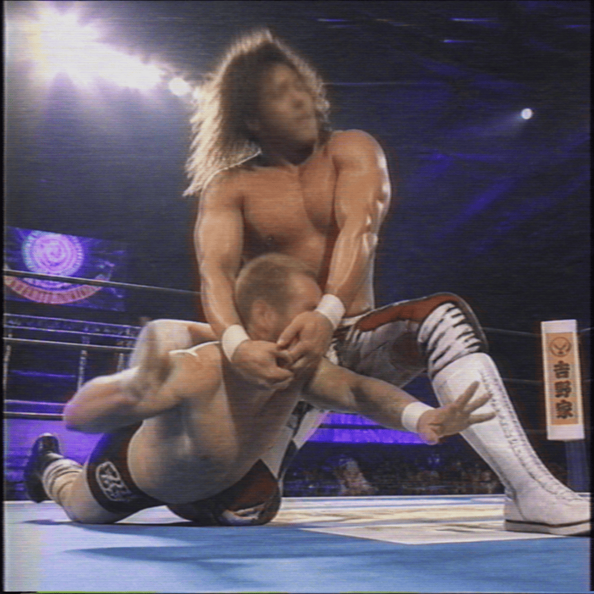

2026/10/08(木)
アベマ・試合結果速報！
○タマ・トンガ (18分32秒 トンガン・ツイスター) La Parka●
○アントニオ猪木 (23分15秒 アントニオ・ホールド) El Hijo del Vikingo●
○棚橋弘至 (10分45秒 ハイフライフロー) キット・ウィルソン●
○ジェイ・ウーソ (20分05秒 スプラッシュ) Dr. Wagner Jr.●
○マキシン・デュプリ (15分28秒 フェイスバスター) イヨ・スカイ●
○棚橋弘至 (25分00秒 トランキル・トラップ) タイラー・ベイト●
○ジェフ・コブ (19分11秒 コブ・ウエイバー) デクスター・ルミス●
○真壁刀義 (16分30秒 ランニング・ストンピング) アクシオム●
○レイ・ミステリオ (12分50秒 619) ケビン・オーエンズ●
○エグゼビア・ウッズ (17分22秒 フライング・フォーアーム) ペンタ●
○La Parka (22分41秒 パーク・スプラッシュ) ジェイク・リー●
○カラム・ニューマン (14分18秒 スワントーン・ボム) ウルフアロン●
○ベッキー・リンチ (21分30秒 ストレッチ・マフラー) マキシン・デュプリ●
Thank you for Watching !

「○棚橋弘至 (25分00秒 トランキル・トラップ) タイラー・ベイト●」